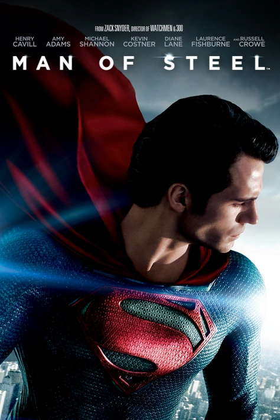
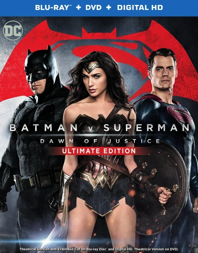
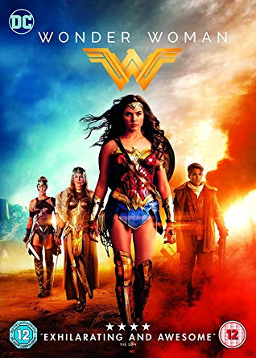
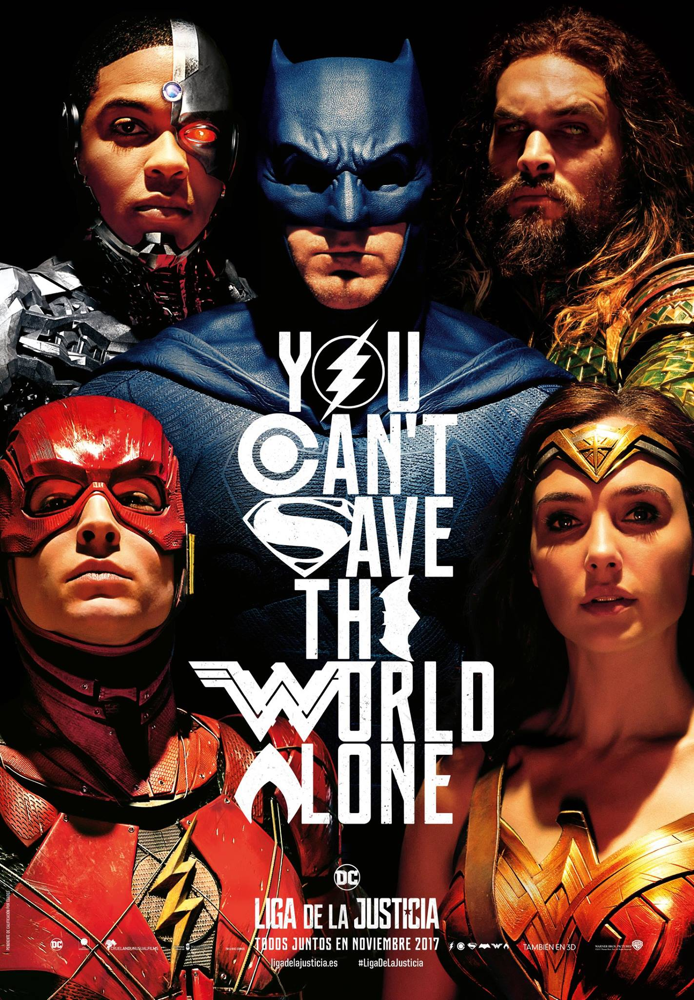
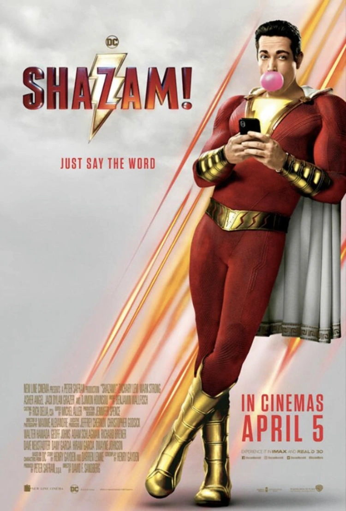
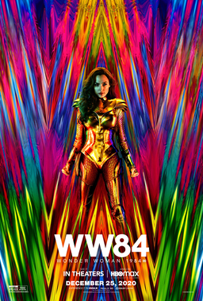

Catálogo de Películas DCEU
Explora la colección completa de películas del Universo Cinematográfico de DC, desde los orígenes de nuestros
héroes favoritos hasta las épicas aventuras en equipo que han definido una era del cine de superhéroes.
| Película | Imagen | Descripción | Año | Calificación |
|---|---|---|---|---|
| Man of Steel |  | La historia del origen de Superman, desde su llegada a la Tierra hasta convertirse en el héroe que conocemos. Clark Kent descubre sus poderes y enfrenta al General Zod en una épica batalla por el destino de la humanidad. |
2013 | 7.1/10 |
| Batman v Superman |  | El enfrentamiento épico entre dos de los superhéroes más icónicos. Batman ve a Superman como una amenaza, mientras Lex Luthor manipula desde las sombras para destruir a ambos héroes. |
2016 | 6.4/10 |
| Wonder Woman |  | Diana Prince abandona su isla natal durante la Primera Guerra Mundial para ayudar a la humanidad. Una historia de origen que muestra cómo se convirtió en Wonder Woman, la guerrera amazona. |
2017 | 7.4/10 |
| Justice League |  | Batman y Wonder Woman reclutan a Flash, Aquaman y Cyborg para formar la Liga de la Justicia y enfrentar a Steppenwolf, quien busca conquistar la Tierra con el poder de las Cajas Madre. |
2017 | 6.1/10 |
| Aquaman | Arthur Curry debe reclamar su derecho al trono de Atlantis y unir los mundos de la superficie y el océano. Una aventura submarina llena de acción, magia y criaturas extraordinarias. |
2018 | 6.8/10 | |
| Shazam! |  | Billy Batson, un adolescente problemático, recibe poderes mágicos que lo transforman en el superhéroe adulto Shazam. Una mezcla perfecta de comedia, corazón y aventura sobrenatural. |
2019 | 7.0/10 |
| Wonder Woman 1984 |  | Diana Prince enfrenta a dos nuevos enemigos en los años 80: Maxwell Lord y Cheetah, mientras lidia con el regreso milagroso de Steve Trevor y un artefacto que concede deseos. |
2020 | 5.4/10 |
| The Flash |  |
Barry Allen viaja en el tiempo para salvar a su madre, pero alterando el pasado crea una realidad alternativa donde debe unir fuerzas con diferentes versiones de los héroes. |
2023 | 6.7/10 |